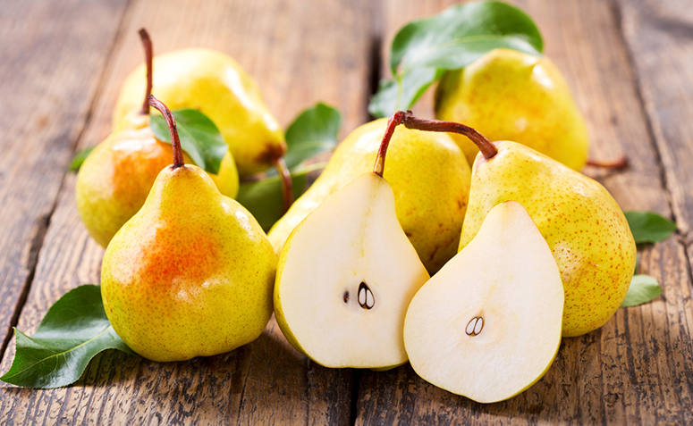

Sobre Mim
Sou um fotógrafo apaixonado por capturar momentos únicos e expressar emoções através das lentes. Aqui você encontra uma seleção de meus trabalhos favoritos.

Goibinha

Maçazinha
Uvinhas

Perinha
Entre em Contato
Para sessões fotográficas ou informações sobre meus trabalhos, entre em contato através das redes sociais ou envie um e-mail para contato@fotografia.com.